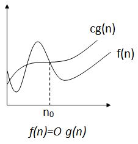
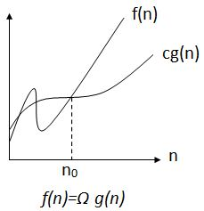
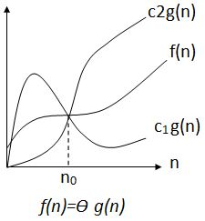

Q1. Explain Big-Oh, Omega and Theta notation with the help of diagram.
Ans:
Big-Oh Notation (O) :

‘O’ (Big Oh) is the most commonly used notation.
A function f(n) can be represented is the order of g(n) that is O(g(n)), if there exists a value of positive integer n as n0 and a positive constant c such that −
f(n)<= c.g(n) for n>n0 in all case.
Hence, function g(n) is an upper bound for function f(n) , as g(n) grows faster than f(n).
Example
Let us consider a given function, f(n)=10n2+2n+1
Considering g(n)=n2 ,
f(n)⩽10.g(n) for all the values of n>2
Hence, the complexity of f(n) can be represented as O(g(n)), i.e. O(n2).
Omega Notation (Ω):

We say that f(n)=Ω(g(n)) when there exists constant c that f(n)⩾c.g(n) for all sufficiently large value of n. Here n is a positive integer.
It means function g is a lower bound for function f; after a certain value of n, f will never go below g.
Example
Let us consider a given function, f(n)=10.n2+2.n+1.
Considering g(n)=n2 ,
f(n)⩾10.g(n) for all the values of n>0.
Hence, the complexity of f(n) can be represented as Ω(g(n)), i.e. Ω(n2).
Theta Notation (Ɵ):

We say that f(n)=θ(g(n)) when there exist constants c1 and c2 that c1.g(n)⩽f(n)⩽c2.g(n) for all sufficiently large value of n. Here n is a positive integer.
This means function g is a tight bound for function f.
Example
Let us consider a given function, f(n)=10.n2+2.n+1
Considering g(n)=n2,
10.g(n)⩽f(n)⩽11.g(n) for all the large values of n.
Hence, the complexity of f(n) can be represented as θ(g(n)), i.e. θ(n2)